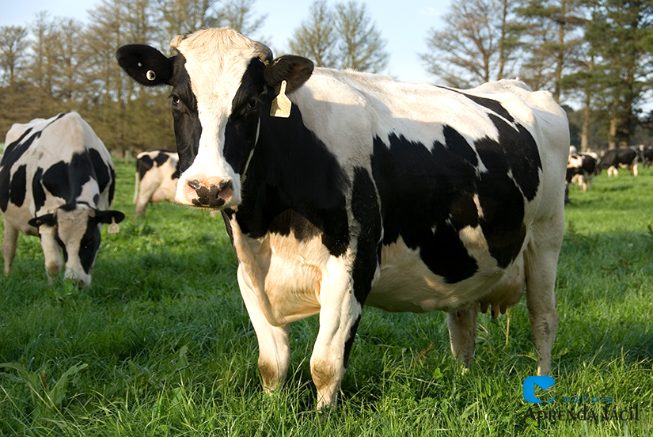

A vaca leiteria é um dos animais mais iportantes para cooperativas agrícolas.Ela é criada principalmente para a produção de leite,que pode ser usado in naturaou transformado em queijo,manteigua e iogurte
Uma vaca leiteira adulta pode produzir vários litros de leite por dia,Ela precisa de uma boa alimentação,água limpa e cuidados veterinários regulares para manter a saúde e a produção.
Ficha produzida para a aula de progamação web.
_